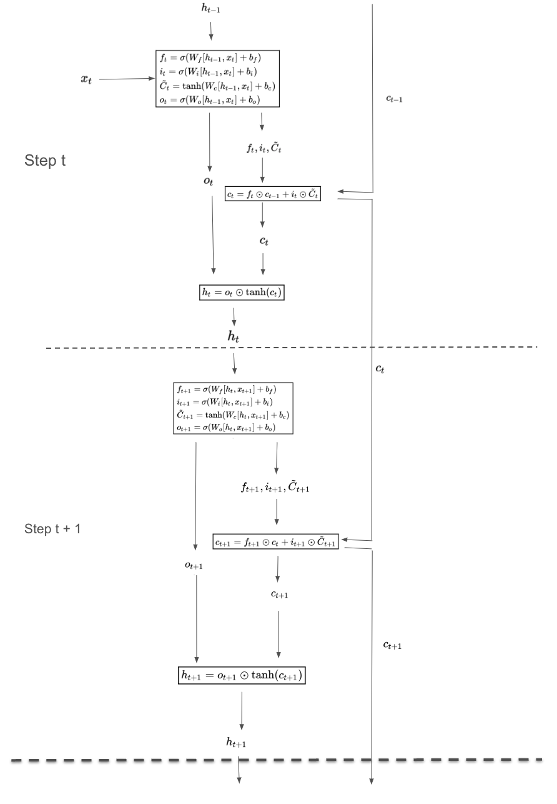

LLMs are the hot topic of the times and not knowing details of LLMs makes me feel uneducated. Fortunately I have been traditionally interested and resonably strong in Mathematics so understanding the models well enough to make me feel happy is a matter of a bit of effort. I am not going to know the nitty gritty of training LLMs unless I work full time on the topic, but just knowing the basic architecture at mathematical level makes me feel wholesome.
LLMs are a type of sequence models, so in this article we are going to understand mathematical formulations of various types of sequence models.
There is an input sequence $x_1, x_2, \dots, x_m$, and we want to translate it to output sequence $y_1, y_2, \dots y_n$.
Let inputs be of size $n$. RNN consists of first deciding $h$ - the size of hidden state, and then finding the following five matrices:
Once we have the above three matrices, output $y_t$ is found using following equations:
$h_t = \tanh(W_hh_{t-1} + W_xx_t + b_h)$
$y_t = W_yh_t + b_y$
Diagramatically we can visualise this as following:
Limitation of basic RNN is that $h_t$ needs to contain the full context of the sequence so far - its memory is mostly short term. Further, it is not aware of future context. So, if some $y_i$'s depend on $x_j$ with $j>i$, that depedency capturing is not possible.
LSTM try to solve for the problem that RNN memory is short term.
Again, let input vectors $x_i$'s be of size $n$. We decide the size $h$ of hidden states.
There are five intermediate variables: $f_t, i_t, \tilde{C_t}, c_t, h_t$ for $t = 1, 2, \dots$. Here is a description of those
| Variable | Purpose | Dimension | Formula |
|---|---|---|---|
| $f_t$ | Forget gate vector - controls what information to remove from cell state | h×1 | $f_t = \sigma(W_f[h_{t-1}, x_t] + b_f)$ |
| $i_t$ | Input gate vector - controls what new information to store | h×1 | $i_t = \sigma(W_i[h_{t-1}, x_t] + b_i)$ |
| $\tilde{C}_t$ | Candidate cell state - proposes new values to potentially add to state | h×1 | $\tilde{C}_t = \tanh(W_C[h_{t-1}, x_t] + b_C)$ |
| $c_t$ | Cell state - maintains long-term memory | h×1 | $c_t = f_t \odot c_{t-1} + i_t \odot \tilde{C}_t$ |
| $h_t$ | Hidden state - output and passed to next time step | h×1 | $h_t = o_t \odot \tanh(c_t)$ where $o_t = \sigma(W_o[h_{t-1}, x_t] + b_o)$ |
And as you can see there are four "weight matrics" and four "bias vectors" that the model needs to learn. $W_f, W_i, W_C, W_o$ and $b_f, b_i, b_C, b_o$. Dimensions of weight matrices are $h \times (n + h) $ and dimensions of bias matrices are $h \times 1$.
Here is a diagram illustrating the above computations. 